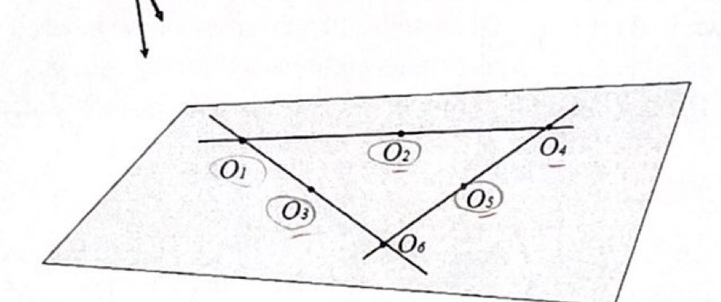
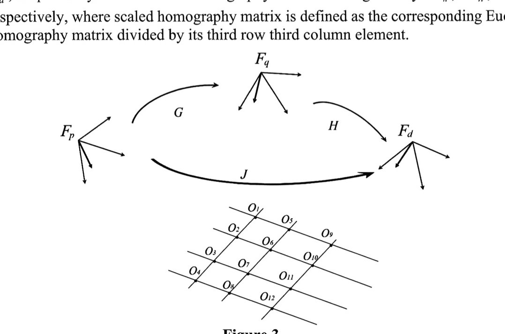

EE6221 · Quiz #2 guided test from past questions
Honest scope note: no past Quiz 2 paper is available, so these are the closest real questions. The quiz is short questions (closed book, no calculator). Each exam sub-part below is roughly one quiz-sized item, and together they cover the derivations the lecturer named as key (homography Lec 3 pp. 31–32, Kalman gain Lec 4). Type your answer or working first, then check or reveal the guidance. Open Hint only if you are stuck. Answers are saved if you refresh. Exam wording is condensed here; click a citation to see the original page.
Part A · The lecturer's in-class questions
Prof. Hu asked these in class and said they show the quiz style: a concept plus a one-line reason, or a small hand calculation. Source: Week 8 and Week 9 transcripts (machine transcription, so the wording is approximate). Model answers are mine and grounded in the slides cited.
A1 (Week 8) · Can a robot act intelligently using only internal (proprioceptive) sensors? Why?
Hint
What do internal sensors measure, and what does “intelligent” behaviour have to react to?
Answer & guidance
No (not in an unknown or changing environment).
Internal sensors measure only the robot's own state (joint angles, wheel speed, battery). Acting intelligently means reacting to the environment (obstacles, targets, people), which needs external (exteroceptive) sensors.
A robot with only encoders can repeat a pre-programmed path, but it cannot notice that the world has changed. Lec 1 pp. 17–18
A2 (Week 8) · Why use multiple sensors?
Hint
Think of two reasons: each sensor's weaknesses, and what fusing noisy readings does to the variance.
Answer & guidance
No single sensor is accurate, reliable and complete in every condition. Different sensors cover each other's weaknesses (for example, GPS corrects IMU drift), add redundancy if one fails, and when fused they give a lower-variance estimate than any single sensor.
The variance claim is exactly what Part C proves: optimal fusion gives $1/p_{\text{new}}=1/p+\sum_i 1/\sigma_i^2$, which is smaller than any single term. Lec 4 pp. 40–41
A3 (Week 8) · Which of these are active sensors: camera, LiDAR, ultrasonic?
Hint
Active means the sensor emits its own energy into the scene.
Answer & guidance
LiDAR and ultrasonic are active: they emit light or sound pulses and time the return. A (normal) camera is passive: it only receives light that is already present.
An ultrasonic sensor “listens for the echo”, but it is still active because it sends the pulse in the first place. Lec 1 p. 19
A4 (Week 8) · A sensor gives the same wrong reading every time. Is it accurate or precise?
Hint
Accuracy compares the reading with the true value. Precision compares readings with each other.
Answer & guidance
Precise, but not accurate.
The readings agree with each other (high repeatability, small spread, so precise), but they are all offset from the true value (a systematic error, so not accurate).
Course formulas: accuracy $=1-|m-v|/v$; precision $=$ range / standard deviation. A constant offset fixes the first without changing the second. Lec 1 pp. 25–26
A5 (Week 8, “a question to help you prepare for the quiz”) · Why does integrating IMU data over a long time drift?
Hint
Integrate a small constant bias $b$ in acceleration twice.
Answer & guidance
Position is obtained by integrating acceleration twice, so even a tiny bias or noise accumulates: a constant bias $b$ gives a velocity error $bt$ and a position error $\tfrac12bt^2$, which grows without bound. An absolute reference (GPS, magnetometer) is needed to correct it.
A6 (Week 8) · An ultrasonic echo returns after 10 ms. The speed of sound is 340 m/s. How far away is the object?
Hint
The sound travels out and back.
Answer & guidance
$d=\dfrac{c\,t}{2}=\dfrac{340\times0.01}{2}=\dfrac{3.4}{2}=1.7$ m.
3.4 m is the round-trip path. Lec 1 p. 36 writes $d=ct$ with $d$ meaning the round trip, while p. 38 uses $ct/2$ for the range. Say which one you are giving. Lec 1 p. 36 p. 38
A7 (Week 9) · What are the benefits of vision (camera) feedback for a robot?
Hint
Think about how much information is in one image, energy, and what you need to know in advance.
Answer & guidance
Rich information (shape, texture, colour, many features at once). Passive, so it emits nothing and does not interfere. Cheap and contact-free. It can control relative to what is seen, without needing the absolute position of the robot or the target.
A8 (Week 9) · With one eye closed, why can you not tell the distance to a bottle of unknown size from one image?
Hint
Write $\bar m = z\,m$. What does the image give you?
Answer & guidance
Projection divides by depth: $m=[x/z,\,y/z,\,1]^{\mathsf T}$. A small bottle near the camera and a bigger one further away give the same image, so one image fixes only the direction (the ray), not the depth $z$. Extra information is needed: a known size, a second view, or a range sensor.
A9 (Week 9) · Do all 3D points on the same ray through the camera centre map to the same image point?
Hint
Scale $\bar m$ by $\lambda$ and compute $m$.
Answer & guidance
Yes.
The points on the ray are $\lambda\bar m$, and $\dfrac{\lambda x}{\lambda z}=\dfrac{x}{z}$, $\dfrac{\lambda y}{\lambda z}=\dfrac{y}{z}$. They give the same $m$, so the same pixel $p=Am$. This is the depth loss in A8.
A10 (Week 9) · A straight edge appears curved in an image. Is this caused by lens distortion or by defocus?
Hint
Which one moves points, and which one only spreads them?
Answer & guidance
Lens distortion.
Distortion is a nonlinear change of image geometry (points move, so straight lines bend). Defocus only blurs each point into a spot. Edges become fuzzy but stay straight.
Distortion parameters are “not the focus of this class”, so know the concept only. Lec 2 p. 32
A11 (Week 9) · A $32\times32$ grayscale image uses 8 bits per pixel. How many grey levels are there, and how many bytes does the image need?
Hint
$n$ bits give $2^n$ values. 8 bits is one byte.
Answer & guidance
$2^8=256$ levels (0–255). Pixels $=32\times32=1024$, at 1 byte each $=1024$ bytes (1 KB).
A12 (Week 9) · A point's depth $z$ doubles while its $x$ and $y$ stay fixed. What happens to its normalised coordinates? To its pixel coordinates?
Hint
$m=[x/z,\,y/z,\,1]^{\mathsf T}$, then $p=Am$ adds the principal point.
Answer & guidance
The normalised coordinates $x/z$ and $y/z$ halve (the point moves halfway towards the optical axis). In pixels, only the offset from the principal point $(u_0,v_0)$ halves: $u-u_0=f\sigma_x\,x/z$ halves, but $u$ itself does not.
Saying “the pixel coordinates halve”. That is true only if $u_0=v_0=0$. Lec 2 p. 30
A13 (Week 9) · What does camera calibration need?
Hint
Calibration estimates $A$. What pairs of known and measured quantities would let you solve for it?
Answer & guidance
A calibration target of known geometry (known 3D point positions, for example a checkerboard) and the measured image (pixel) coordinates of those points. Matching them lets you solve for the intrinsic matrix $A$ ($f$, the scale factors, $(u_0,v_0)$) and the distortion.
Part B · Homography (past exam Q4)
One toolkit for all four papers. “$H$ from $F_a$ to $F_b$” means $m_{ib}=\alpha_i H m_{ia}$ for coplanar points, with $H=R+\frac{x}{d^*}n^{*\mathsf T}$ and $\alpha_i$ the depth ratio. The scaled matrix $H_n=H/h_{33}$ has 8 unknowns $h=[h_1,\dots,h_8]^{\mathsf T}$. Each matched point with $m_{ia}=[x_a,y_a,1]^{\mathsf T}$, $m_{ib}=[x_b,y_b,1]^{\mathsf T}$ gives two linear equations: $$\begin{bmatrix}x_a&y_a&1&0&0&0&-x_ax_b&-y_ax_b\\0&0&0&x_a&y_a&1&-x_ay_b&-y_ay_b\end{bmatrix}h=\begin{bmatrix}x_b\\y_b\end{bmatrix}.$$ So you need at least 4 coplanar points seen in both images, with no three collinear. Lec 3 pp. 31–32 (Week 10: slides 31–32 are key points, while decomposing $H$ on slides 33–36 is “not tested”.)
B1 · 2016-17 Q4 exam pp. 6–7
Six coplanar points lie on three lines, as in the figure: $\{O_1,O_2,O_4\}$, $\{O_1,O_3,O_6\}$, $\{O_4,O_5,O_6\}$. So $O_1,O_4,O_6$ are the corners of a triangle and $O_2,O_3,O_5$ lie on its sides. The camera views them from $F_a$ and $F_b$, and $H$ maps $F_a\to F_b$.

B1(a) (12 marks) · $O_2,O_3,O_5,O_6$ are seen in both images, with $m_{2a}=[a_1,a_2,1]^{\mathsf T}$, $m_{3a}=[a_3,a_4,1]^{\mathsf T}$, $m_{5a}=[a_5,a_6,1]^{\mathsf T}$, $m_{6a}=[a_7,a_8,1]^{\mathsf T}$ and similarly $m_{ib}$ with $b_1,\dots,b_8$. Find $H/h_{33}$.
Hint
Start from $m_{ib}=\alpha_iHm_{ia}$, divide $H$ by $h_{33}$, use row 3 to eliminate the depth ratio, then stack 4 points into one $8\times8$ system.
Answer & guidance
- $m_{ib}=\alpha_i H m_{ia}=(\alpha_ih_{33})\,H_n m_{ia}$ with $H_n=H/h_{33}=\begin{bmatrix}h_1&h_2&h_3\\h_4&h_5&h_6\\h_7&h_8&1\end{bmatrix}$. Dividing by $h_{33}$ removes the scale ambiguity (an unknown-scale $H$ has only 8 independent entries).
- Row 3: $1=\alpha_ih_{33}(h_7x_a+h_8y_a+1)$, so the scalar $\alpha_ih_{33}$ is fixed by $h$. Substitute it into rows 1 and 2 and multiply out. This gives the two linear rows in the toolkit above.
- Stack the four points (O₂: $a_1,a_2\to b_1,b_2$; O₃: $a_3,a_4\to b_3,b_4$; O₅; O₆): $$\underbrace{\begin{bmatrix}a_1&a_2&1&0&0&0&-a_1b_1&-a_2b_1\\0&0&0&a_1&a_2&1&-a_1b_2&-a_2b_2\\ a_3&a_4&1&0&0&0&-a_3b_3&-a_4b_3\\0&0&0&a_3&a_4&1&-a_3b_4&-a_4b_4\\ \vdots&&&&&&&\vdots\\0&0&0&a_7&a_8&1&-a_7b_8&-a_8b_8\end{bmatrix}}_{M\ (8\times8)}h=\begin{bmatrix}b_1\\b_2\\ \vdots\\b_8\end{bmatrix}.$$
- No three of $O_2,O_3,O_5,O_6$ are collinear (check against the three lines), so $M$ is invertible: $h=M^{-1}[b_1,\dots,b_8]^{\mathsf T}$. Fold $h$ back into $H_n$.
Marks: the relation $m_b=\alpha Hm_a$, the scaling by $h_{33}$, eliminating $\alpha$ with row 3, the explicit $M$, the invertibility condition, and the final $H/h_{33}$ assembled from $h$.
Leaving $\alpha_i$ in the final system. It is unknown per point and must be eliminated with row 3.
B1(b) (4 marks) · $F_a$ sees only $O_1,O_2,O_3,O_5$, and $F_b$ sees only $O_2,O_3,O_4,O_5$. Can $H/h_{33}$ be calculated?
Hint
Only points seen in both images give equations.
Answer & guidance
No.
The common points are only $O_2,O_3,O_5$: 3 points give 6 equations for 8 unknowns, so the system is underdetermined. At least 4 coplanar points matched in both images, no three collinear, are needed.
B1(c) (4 marks) · All six points are seen in both images. List all combinations of feature points that can be used to calculate $H/h_{33}$. How many four-point groups are there?
Hint
There are $\binom64=15$ groups. Remove every group that contains one of the three collinear triples. Can a 4-point group contain two triples?
Answer & guidance
- $\binom64=15$ four-point groups in total.
- Each collinear triple, plus any one of the other 3 points, gives a bad group: $3\times3=9$. Two triples share at most one point, so their union has 5 points and no group is counted twice.
- $15-9=6$ valid groups: $\{O_1,O_2,O_3,O_5\}$, $\{O_2,O_3,O_4,O_5\}$, $\{O_2,O_3,O_5,O_6\}$ (the three side points plus any corner), and $\{O_1,O_2,O_5,O_6\}$, $\{O_1,O_3,O_4,O_5\}$, $\{O_2,O_3,O_4,O_6\}$.
6 groups of four points, as listed, each coplanar with no three collinear. Any 5 or all 6 points also work (they always contain a valid group), solved by least squares on the stacked $Mh=m$.
Listing $\{O_1,O_2,O_3,O_4\}$. It contains the collinear triple $O_1,O_2,O_4$, so it gives a singular $M$. (One handwritten solution in the archive lists it.)
B2 · 2015-16 Q4 exam pp. 10–11
Five coplanar points $O_1,\dots,O_5$, any four of them non-collinear. Three camera poses: $F_b$ sees all five, $F_a$ sees $O_1$–$O_4$ and $F_c$ sees $O_2$–$O_5$. $H$: $F_a\to F_b$, $J$: $F_b\to F_c$, $K$: $F_a\to F_c$. (The paper prints “normalised coordinates in $F_b$” for the $c$-points; it means $F_c$.)
B2(a) (14 marks) · Derive two sets of equations that can be used to compute $H/h_{33}$ and $J/j_{33}$.
Hint
For each matrix, which four points are seen in both of its images?
Answer & guidance
- $H$ ($a\to b$): common points $O_1,O_2,O_3,O_4$. For each, $m_{ib}=\alpha_iHm_{ia}$, so in scaled form use the two toolkit rows with $(x_a,y_a)=(a_{ix},a_{iy})$, $(x_b,y_b)=(b_{ix},b_{iy})$. Stack them into $M_Hh=[b_{1x},b_{1y},\dots,b_{4y}]^{\mathsf T}$, then $h=M_H^{-1}(\cdot)$.
- $J$ ($b\to c$): common points $O_2,O_3,O_4,O_5$. Use $m_{ic}=\beta_iJm_{ib}$ and the same rows with $(x_a,y_a)\to(b_{ix},b_{iy})$, $(x_b,y_b)\to(c_{ix},c_{iy})$. Stack them into $M_Jj=[c_{2x},\dots,c_{5y}]^{\mathsf T}$.
- Each $8\times8$ system is invertible only if no three of its four points are collinear. The paper's “any four non-collinear” is read as guaranteeing this.
Two $8\times8$ linear systems, each derived from $m=\alpha\,(\cdot)\,m$ with row-3 elimination, as in B1(a).
B2(b) (6 marks) · Can $K/k_{33}$ be obtained? If yes, how? If no, why not?
Hint
Directly, $F_a$ and $F_c$ share only $O_2,O_3,O_4$. But you already have $H$ and $J$. Chain the two maps.
Answer & guidance
Yes, by composing the two homographies.
- Directly it is impossible: only 3 common points ($O_2,O_3,O_4$).
- For any point on the plane: $m_{ib}=\alpha_iHm_{ia}$ and $m_{ic}=\beta_iJm_{ib}$, so $m_{ic}=\alpha_i\beta_i\,JH\,m_{ia}$. Hence $K\propto JH$ (in Euclidean terms $\bar m_c=J\bar m_b=JH\bar m_a$).
- With the scaled matrices from (a): $K_s=\dfrac{J}{j_{33}}\dfrac{H}{h_{33}}$, then $\dfrac{K}{k_{33}}=\dfrac{K_s}{(K_s)_{33}}$ (divide by its own (3,3) entry).
Answering “No, only three common points”. That ignores the middle view. An archive solution makes exactly this mistake. The order also matters: $JH$, not $HJ$ ($H$ acts first).
B3 · AY24-25 S1 Q4 exam pp. 4–5
Twelve coplanar points form a grid. Columns $\{O_1..O_4\}$, $\{O_5..O_8\}$, $\{O_9..O_{12}\}$ and rows $\{O_1,O_5,O_9\}$, $\{O_2,O_6,O_{10}\}$, $\{O_3,O_7,O_{11}\}$, $\{O_4,O_8,O_{12}\}$ make the 7 lines. $F_p$ sees $O_1$–$O_8$, $F_q$ sees all 12, and $F_d$ sees $O_5$–$O_{12}$. $G$: $F_p\to F_q$, $H$: $F_q\to F_d$, $J$: $F_p\to F_d$. Scaled matrices: $G_n,H_n,J_n$.

B3(a) (7 marks) · Choose one group of feature points and derive $G_n$.
Hint
Common to $F_p$ and $F_q$: $O_1$–$O_8$ (two columns). Pick 4 points with no three on one line.
Answer & guidance
Choose e.g. $O_1,O_2,O_5,O_6$: two from each column, and in different rows, so no three are collinear. For each, $m_{iq}=\alpha_iG\,m_{ip}$. Scale by $g_{33}$, eliminate $\alpha_i$ with row 3, and stack the $2\times8$ rows with $(x_a,y_a)=(p_{ix},p_{iy})$, $(x_b,y_b)=(q_{ix},q_{iy})$. Then $g=M^{-1}[q_{1x},q_{1y},q_{2x},\dots,q_{6y}]^{\mathsf T}$ gives $G_n$.
Picking $O_1,O_2,O_3,O_5$: $O_1,O_2,O_3$ lie on one column, so $M$ is singular.
B3(b) (6 marks) · How many groups of four feature points can be used to derive $H_n$?
Hint
$H$ is $F_q\to F_d$. The common points are $O_5$–$O_{12}$: two columns of 4. The rows now contain only 2 of these points each. Which groups contain three collinear points?
Answer & guidance
- Common points: $O_5,\dots,O_{12}$, so $\binom84=70$ groups.
- Within these 8 points, the only lines with ≥ 3 of them are the two columns. The rows hold just 2 each ($O_5,O_9$ etc.), so they cannot cause collinear triples.
- Bad groups (≥ 3 points from one column): $\binom43\binom41+\binom44=17$ per column, so 34.
- Good groups: $70-34=36$, which equals exactly 2 points from each column, $\binom42\binom42=6\times6=36$.
36 groups, each made of 2 points from $\{O_5..O_8\}$ and 2 from $\{O_9..O_{12}\}$.
The archived student solution gets 68 by also counting “3 from one column + 1 from the other”. Those groups contain three collinear points and cannot determine $H$.
B3(c) (7 marks) · Derive $J_n$.
Hint
Points common to $F_p$ and $F_d$: $O_5$–$O_8$. Is that enough on its own? This is B2(b) again.
Answer & guidance
- Directly it is impossible: the common points $O_5,O_6,O_7,O_8$ are all on one line (a column), so $M$ is singular.
- Compose through $F_q$: $m_{iq}=\alpha_iGm_{ip}$ and $m_{id}=\beta_iHm_{iq}$, so $m_{id}=\alpha_i\beta_i\,HG\,m_{ip}$ and $J\propto HG$.
- $J_n=\dfrac{H_nG_n}{(H_nG_n)_{33}}$, using $G_n$ from (a) and $H_n$ from any group in (b).
$J_n=H_nG_n/(H_nG_n)_{33}$, because the direct route fails (all common points are collinear).
Writing $GH$. $G$ acts first ($p\to q$), so it sits on the right.
B4 · 2017-18 Q4 exam p. 8
B4(a) (10 marks) · Four coplanar, non-collinear points are measured in pixel coordinates $p_{ia}=[a_{2i-1},a_{2i},1]^{\mathsf T}$ at $P_a$ and $p_{ib}=[b_{2i-1},b_{2i},1]^{\mathsf T}$ at $P_b$. With depth ratios $\alpha_i$ and calibration matrix $A$, determine $H/h_{33}$.
Hint
$H$ relates normalised coordinates. Convert first: $p=Am$.
Answer & guidance
- Normalise: $m_{ia}=A^{-1}p_{ia}$ and $m_{ib}=A^{-1}p_{ib}$. Their third entries stay 1 because $A$'s last row is $[0,0,1]$.
- Then $m_{ib}=\alpha_iHm_{ia}$, which in pixels reads $p_{ib}=\alpha_i\,AHA^{-1}\,p_{ia}$ (the projective homography $G=AHA^{-1}$).
- Scale by $h_{33}$, eliminate $\alpha_i$ with row 3, and stack 4 points into an $8\times8$ system as in B1(a), using the entries of $m_{ia},m_{ib}$. Solve for $h$ to get $H/h_{33}$.
Plugging pixel numbers straight into the rows gives $G=AHA^{-1}$ (scaled), not $H$. You must say where $A^{-1}$ enters. Lec 2 p. 30
Parts (b) (decomposing $H$ into $R$ and $x/d^*$) and (c) (a visual-servo control law) are skipped. The lecturer said decomposition is not tested, and (c) is Lec 5–6 material, outside the Quiz 2 scope.
Part C · Multi-sensor Kalman fusion (past exam Q5)
Four moves every year: (1) write the error $\tilde x_{k+1}=x_{k+1}-\hat x_{k+1}$ and substitute the sensor models; (2) square it and take expectations, where the cross terms vanish because the variables are uncorrelated and zero-mean; (3) set $\partial p_{k+1}/\partial(\text{each gain})=0$; (4) substitute back. A useful check at the end: optimal fusion satisfies $1/p_{k+1}=1/p_k+\sum_i(\text{information of sensor }i)$. Lec 4 pp. 26–29 pp. 40–42
C1 · 2016-17 Q5 exam p. 8
$x_{k+1}=x_k$. Three sensors $y_{ik}=x_k+v_{ik}$ with variances $\sigma^2,\sigma^2,4\sigma^2$. One gain: $\hat x_{k+1}=\hat x_k+M_k(y_{1k}-\hat x_k)+M_k(y_{2k}-\hat x_k)+M_k(y_{3k}-\hat x_k)$.
C1(a) (15 marks) · Find the update equation for $p_{k+1}$ and derive the $M_k$ that minimises it.
Hint
Each $y_{ik}-\hat x_k=\tilde x_k+v_{ik}$. You get $(1-3M_k)\tilde x_k$ plus a noise term. What is the variance of $v_1+v_2+v_3$?
Answer & guidance
- $\tilde x_{k+1}=x_k-\hat x_k-M_k\sum_i(\tilde x_k+v_{ik})=(1-3M_k)\tilde x_k-M_k(v_{1k}+v_{2k}+v_{3k})$.
- Square it. The cross terms vanish (uncorrelated, zero mean), and $V(v_1+v_2+v_3)=\sigma^2+\sigma^2+4\sigma^2=6\sigma^2$: $$p_{k+1}=(1-3M_k)^2p_k+6\sigma^2M_k^2.$$
- $\dfrac{\partial p_{k+1}}{\partial M_k}=-6(1-3M_k)p_k+12\sigma^2M_k=0\Rightarrow M_k=\dfrac{p_k}{3p_k+2\sigma^2}$.
- Substitute: $1-3M_k=\dfrac{2\sigma^2}{3p_k+2\sigma^2}$, so $$p_{k+1}=\frac{2\sigma^2p_k}{3p_k+2\sigma^2}\quad\Big(\text{i.e. }\frac1{p_{k+1}}=\frac1{p_k}+\frac{3}{2\sigma^2}\Big).$$
Writing the noise variance as $(\sigma+\sigma+2\sigma)^2$. Variances of uncorrelated terms add; standard deviations do not.
C1(b) (5 marks) · With $p_1=\sigma^2$, find the value of $k$, if any, such that $p_{k+1}$ first becomes less than $\sigma^2/10$.
Hint
Use the reciprocal form. Each step adds the same amount to $1/p$.
Answer & guidance
- $\dfrac1{p_{k+1}}=\dfrac1{p_1}+k\cdot\dfrac{3}{2\sigma^2}=\dfrac{2+3k}{2\sigma^2}$, so $p_{k+1}=\dfrac{2\sigma^2}{2+3k}$.
- $p_{k+1}<\dfrac{\sigma^2}{10}\iff 2+3k>20\iff k>6$.
- Check: $k=6$ gives exactly $\sigma^2/10$ (not less), and $k=7$ gives $2\sigma^2/23<\sigma^2/10$.
$k=7$ (so $p_8=2\sigma^2/23$).
Answering $k=6$ (boundary equality) or forgetting that the count starts from $p_1$, not $p_0$.
C2 · AY24-25 S1 Q5 exam p. 5
$x_{k+1}=x_k$. $y_{ik}=x_k+v_{ik}$ with variances $a^2,4a^2,9a^2$.
C2(a) (10 marks) · Using $\hat x_{k+1}=\hat x_k+L_{1k}(y_{1k}-\hat x_k)+L_{2k}(y_{2k}-\hat x_k)+L_{3k}(y_{3k}-\hat x_k)$, design the update laws for the three gains that minimise $p_{k+1}$.
Hint
Let $S=L_1+L_2+L_3$. Each partial derivative gives $L_i\sigma_i^2=(1-S)p_k$. Sum the $L_i$ to find $S$.
Answer & guidance
- $\tilde x_{k+1}=(1-S)\tilde x_k-L_1v_1-L_2v_2-L_3v_3$, so $p_{k+1}=(1-S)^2p_k+a^2L_1^2+4a^2L_2^2+9a^2L_3^2$.
- $\partial/\partial L_i$: $-2(1-S)p_k+2\sigma_i^2L_i=0\Rightarrow L_i=\dfrac{(1-S)p_k}{\sigma_i^2}$.
- Sum: $S=(1-S)p_k\Big(\dfrac1{a^2}+\dfrac1{4a^2}+\dfrac1{9a^2}\Big)=(1-S)p_k\dfrac{49}{36a^2}$, so $1-S=\dfrac{36a^2}{36a^2+49p_k}$.
- $$L_{1k}=\frac{36p_k}{36a^2+49p_k},\quad L_{2k}=\frac{9p_k}{36a^2+49p_k},\quad L_{3k}=\frac{4p_k}{36a^2+49p_k},\quad p_{k+1}=\frac{36a^2p_k}{36a^2+49p_k}.$$
The gains are proportional to $1/\sigma_i^2$ (ratio 36 : 9 : 4), so the least noisy sensor gets the most weight.
No calculator: $\tfrac11+\tfrac14+\tfrac19=\tfrac{36+9+4}{36}=\tfrac{49}{36}$.
C2(b) (10 marks) · Design a strategy with one gain for all three sensors. Compare it with (a): advantages and disadvantages.
Hint
Same as C1 with noise variance $a^2+4a^2+9a^2$. Then compare the reciprocals $1/p_{k+1}$.
Answer & guidance
- $p_{k+1}=(1-3L_k)^2p_k+14a^2L_k^2$, and $\partial/\partial L_k=0$ gives $L_k=\dfrac{3p_k}{9p_k+14a^2}$, so $p_{k+1}=\dfrac{14a^2p_k}{9p_k+14a^2}$.
- Compare information gained per step: one gain adds $\dfrac{9}{14a^2}\approx\dfrac{0.64}{a^2}$ to $1/p$, while three gains add $\dfrac{49}{36a^2}\approx\dfrac{1.36}{a^2}$.
Three gains: lower variance (the optimal weighting by $1/\sigma_i^2$), but more computation and you must know each sensor's variance. One gain: simpler and cheaper, but it weights the noisy sensor as heavily as the good one. Here it is even worse than using sensor 1 alone ($9/14<1$). The two are equal only when all variances are equal.
Saying one gain is “just as good”. Show the number that proves it is not.
C3 · 2015-16 Q5 exam p. 12
$x_{k+1}=x_k$. Two sensors $z_{ik}=c_ix_k+v_{ik}$ ($c_i>0$) with variances $\sigma_1^2,\sigma_2^2$. $\hat x_{k+1}=\hat x_k+L_{1k}(z_{1k}-c_1\hat x_k)+L_{2k}(z_{2k}-c_2\hat x_k)$.
C3(a) (6 marks) · Derive the update equation for $p_{k+1}$.
Hint
$z_i-c_i\hat x=c_i\tilde x+v_i$.
Answer & guidance
$\tilde x_{k+1}=(1-c_1L_{1k}-c_2L_{2k})\tilde x_k-L_{1k}v_{1k}-L_{2k}v_{2k}$, so $$p_{k+1}=(1-c_1L_{1k}-c_2L_{2k})^2p_k+L_{1k}^2\sigma_1^2+L_{2k}^2\sigma_2^2.$$ State that the cross terms vanish because $\tilde x_k,v_{1k},v_{2k}$ are uncorrelated and zero-mean.
C3(b) (8 marks) · Derive $L_{1k},L_{2k}$ that minimise $p_{k+1}$.
Hint
Let $g=1-c_1L_1-c_2L_2$. The partials give $L_i\sigma_i^2=c_i\,g\,p_k$.
Answer & guidance
- $\partial/\partial L_i$: $-2c_i g\,p_k+2L_i\sigma_i^2=0\Rightarrow L_i=\dfrac{c_i\,g\,p_k}{\sigma_i^2}$.
- Substitute into $g$: $g=1-g\,p_kS$ with $S=\dfrac{c_1^2}{\sigma_1^2}+\dfrac{c_2^2}{\sigma_2^2}$, so $g=\dfrac1{1+p_kS}$.
- $$L_{ik}=\frac{c_ip_k}{\sigma_i^2(1+p_kS)},\qquad p_{k+1}=\frac{p_k}{1+p_kS}\quad\Big(\frac1{p_{k+1}}=\frac1{p_k}+\frac{c_1^2}{\sigma_1^2}+\frac{c_2^2}{\sigma_2^2}\Big).$$
Check: with $c_1=c_2=1$ this reduces to the C2 pattern (the gains are proportional to $1/\sigma_i^2$).
C3(c) (6 marks) · Choose $c_1,c_2$ so that $p_{k+1}$ does not depend on $\sigma_1^2,\sigma_2^2$, if possible.
Hint
$\sigma_i$ enters $p_{k+1}$ only through $c_i^2/\sigma_i^2$.
Answer & guidance
Yes. Choose $c_1=\sigma_1$ and $c_2=\sigma_2$ (more generally $c_i=\kappa_i\sigma_i$ with fixed $\kappa_i$). Then $S=2$ and $p_{k+1}=\dfrac{p_k}{1+2p_k}$, which is independent of the noise variances (given $p_0$).
Intuition: a sensor's usefulness is its signal-to-noise ratio $c_i/\sigma_i$. Scaling the gain with the noise keeps that ratio fixed.
C4 · 2017-18 Q5 exam p. 9
Temperature $x_{k+1}=x_k+w_k$ (process noise variance $\sigma_w^2$). $N$ sensors $z_{ik}=x_k+v_{ik}$, each with variance $\sigma^2$. $\hat x_{k+1}=\hat x_k+\sum_{i=1}^NK_{ik}(z_{ik}-\hat x_k)$.
C4(a) (12 marks) · Derive the difference equations for $\tilde x_{k+1}$ and $p_{k+1}$.
Hint
Now $x_{k+1}$ carries $+w_k$, which survives in the error and adds $\sigma_w^2$.
Answer & guidance
$\tilde x_{k+1}=\Big(1-\sum_iK_{ik}\Big)\tilde x_k+w_k-\sum_iK_{ik}v_{ik}$, so $$p_{k+1}=\Big(1-\sum_iK_{ik}\Big)^2p_k+\sigma_w^2+\sigma^2\sum_iK_{ik}^2.$$
C4(b) (8 marks) · Find the optimal gains and the update law for $p_{k+1}$.
Hint
Every partial gives $K_i\sigma^2=(1-\sum K)p_k$. The right side is the same for every $i$, so all gains are equal.
Answer & guidance
- $\partial/\partial K_i$: $K_{ik}=\dfrac{(1-\sum_jK_{jk})p_k}{\sigma^2}$, the same for every $i$. Call it $K_k$.
- $K_k\sigma^2=(1-NK_k)p_k\Rightarrow K_k=\dfrac{p_k}{\sigma^2+Np_k}$.
- $$p_{k+1}=\frac{\sigma^2p_k}{\sigma^2+Np_k}+\sigma_w^2.$$
Reading it: the fusion step shrinks $p$ (equivalent to one sensor with variance $\sigma^2/N$), then the process noise adds $\sigma_w^2$ back. So with $\sigma_w>0$, $p$ settles at a positive floor instead of tending to 0.
Dropping $\sigma_w^2$, or putting it inside the fraction. $w_k$ is not touched by the gains.
After this
Untick anything you could not reproduce on paper and redo it tomorrow. If you have not yet sat Mock 1, sit it cold next. Its Section B is a fresh two-sensor fusion question, so Part C here is direct preparation.